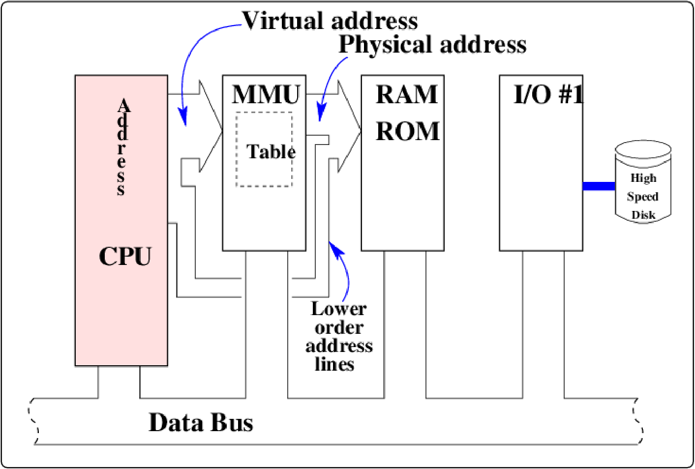
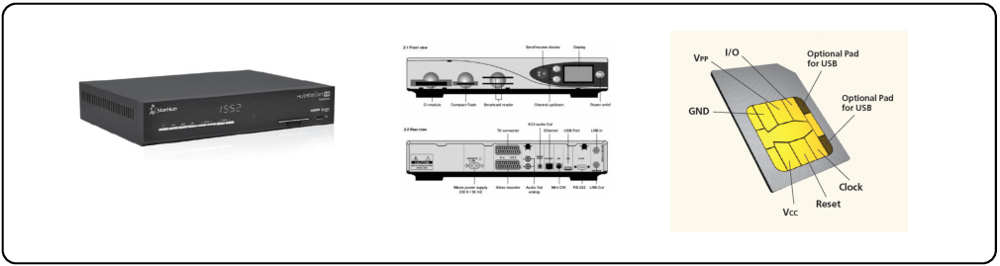

DADA2026:9
Defence against the Dark Arts
Ninth topic - Machine architecture [H10]
July, 2026
Machine architecture: visualizing memory

When programs execute/run, they use memory locations/variables. These variables, at any given time, may reside in various locations in the computer.
Process use of memory


The processes, and the OS kernel, each have their own view of memory, somehow mapped/translated to the real (physical) memory. Modern operating systems and hardware give each process an individual address space - starting at 0x0.
A translation unit maps this virtual address to a real physical address, in fixed size pages.
Sample memory arrangement: Linux ELF format
|
This is just one possible
arrangement of virtual memory (the view that the process has of its
memory in a Linux system). In this arrangement, the stack is at the top
of the memory, and grows downwards.
Hooray for computer scientists, who famously believe that both stacks and trees grow downwards. The code and its fixed storage is at the bottom end of memory, and the malloc’ed memory is “above” the program. Libraries are found at 0x40000000. The odd names are historical. BSS stood for “Block Starting Symbol”, the segment of memory where variables would be stored. The data area was for values that were pre-loaded. |

How programs use memory for return addresses

Return addresses are nested on the stack. If you follow the program, starting at main(), you will see that during the program run, the stack grows and shrinks.
Memory attack 1: stack buffer overflow [5,ctrl-i1]
|
On the left we see detail of the stack usage for a buffer, variables,
and the “return” address.
To the right we see the buffer overwriting the local variables in the frame, and then changing the return address. The payload in the “EGG” is structured to provide some exploit. It has multiple return addresses, and since the stack may be moving, multiple no-ops. |
|
|


Memory attack 4: heap overflow

The OS heap management software automatically rewrites the values of the forward and backward links, using the values in the next links.
Wear a black hat...

Cautious, conservative programming is the main defense, but occasionally you need to put on your black hat, and find out what the attackers have discovered recently...
Possible locations for secrets


Consider all the possible locations for secrets. Relying on external agents is not a bad idea, particularly if they are built with security in mind.
Typical hardware on a Smart/SIM card

- CPU, memory and IO are under the (gold) connector. They are all in one chip, and the components are connected by (internal) busses.
- Reader must supply power and a clock to operate the CPU.
- Only external signaling is a single line IN and a single line OUT.
- Data bits are serialized. 1010011 above might correspond to the byte (hex) 0x53, perhaps corresponding to the ASCII letter S.
Fuses: sample security-specific feature

The chips come from the factory all the same, and need to be programmed.
- When the devices are manufactured, the memory (PROM) can be read and written from outside using the serial port.
- Once the device has been uniquely programmed, a fuse is blown. This fuse is just a track in the IC, and is blown by providing too much current.
A blown fuse means no more ( external) reading and writing.
Fuses: Class 3 attacker hack: rewiring

Recipe: Take a common household electron microscope, a focused ion beam tool, and various other items. And then...
- Expose chip using chemical and/or laser cutting (decapsulation).
- Re-connect the fuse using deposition or tiny probes.
- Read the memory using the serial port.